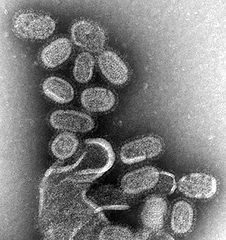
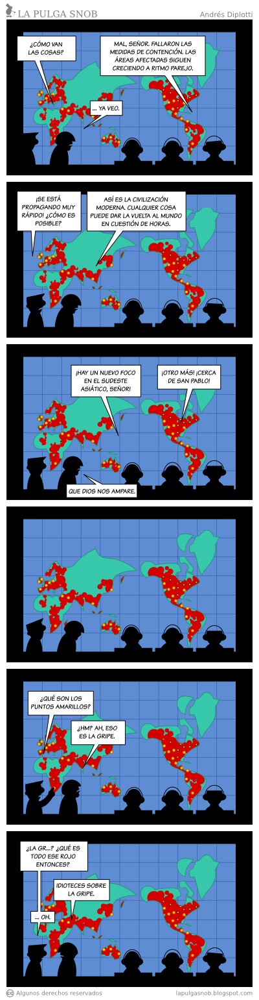

Gripe porcina, eso es todo, eso es todo amigos
Tengo que decir algo sobre Guido Girardi, esta vez no le fallaron las matemáticas, lo que dijo es lógico, y cito:
“es clave que tengamos cinco millones de dosis para cinco millones de personas al menos, porque esta influenza si es tan contagiosa, tranquilamente puede contagiar a dos o tres millones de personas en Chile y si mata al cinco por ciento, en caso de que afecte a dos millones, fácilmente podríamos tener 100 mil muertos”.
Si la tasa de mortalidad de la gripe porcina es de 5%, y se infectan 2.000.000 de persones, entonces se morirán 100.000 personas, simples aritméticas, los números no mienten.
Bien por Girardi, sabe multiplicar.
Todo esto no significa que su razonamiento sea correcto.
El problema es de la premisa con que parte, ¿de donde sacó Girardi que se van a infectar 2.000.000 de chilenos? ¿Por qué necesitamos cinco millones de antivirales? (por que vacuna todavía no hay).
Al igual que la otra vez en que este personaje nos advirtió sobre el terrible peligro de las dioxinas, me puse a investigar un poquito, y encontré cosas interesantes, siendo mi principal fuente la propia Organización Mundial de la Salud (OMS).
El caso de la gripe aviar
Primero, veamos el caso de la gripe aviar, la que presenta un cuadro de gripe más severo que los observados hasta ahora en México, de acuerdo a Ximena Aguilera, experta de la Organización Panamericana de la Salud (La Segunda, 28 de abril, pag. 4).
La gripe aviar surge en 1997, y alcanza su peak en 2005, año en que los diputados del PPD Sanchez, Acorsi y Girardi exigen que se quite la patente del Antiviral TAMIFLU para surtir de las dosis necesarias para cubrirnos ante esta tremenda amenaza (una solicitud ridícula, porque en esa época TAMIFLU no tenía patente en Chile :).
Bueno, les presento el cuadro de casos de gripe aviar a nivel mundial (tomado desde la mismisima OMS):
Cumulative Number of Confirmed Human Cases of Avian Influenza A/(H5N1) Reported to WHO 23 April 2009
Country 2003 2004 2005 2006 2007 2008 2009
Total cases deaths cases deaths
Azerbaijan 0 0 0 0 0 0 8 5 0 0 0 0 0 0 8 5
Bangladesh 0 0 0 0 0 0 0 0 0 0 1 0 0 0 1 0
Cambodia 0 0 0 0 4 4 2 2 1 1 1 0 0 0 8 7
China 1 1 0 0 8 5 13 8 5 3 4 4 7 4 38 25
Djibouti 0 0 0 0 0 0 1 0 0 0 0 0 0 0 1 0
Egypt 0 0 0 0 0 0 18 10 25 9 8 4 16 0 67 23
Indonesia 0 0 0 0 20 13 55 45 42 37 24 20 0 0 141 115
Iraq 0 0 0 0 0 0 3 2 0 0 0 0 0 0 3 2
Lao People’s Democratic Republic 0 0 0 0 0 0 0 0 2 2 0 0 0 0 2 2
Myanmar 0 0 0 0 0 0 0 0 1 0 0 0 0 0 1 0
Nigeria 0 0 0 0 0 0 0 0 1 1 0 0 0 0 1 1
Pakistan 0 0 0 0 0 0 0 0 3 1 0 0 0 0 3 1
Thailand 0 0 17 12 5 2 3 3 0 0 0 0 0 0 25 17
Turkey 0 0 0 0 0 0 12 4 0 0 0 0 0 0 12 4
Viet Nam 3 3 29 20 61 19 0 0 8 5 6 5 3 3 110 55
Total 4 4 46 32 98 43 115 79 88 59 44 33 26 7 421 257 Total number of cases includes number of deaths. WHO reports only laboratory-confirmed cases.
All dates refer to onset of illness.
Veamos..., ¿cuantos casos en Chile? cero, 0, ninguno, nada.
¡En 6 años, 421 casos, con 257 muertes, en todo el mundo! (bueno, no todo el mundo, 15 paises)
¿Donde están los 10 millones de casos que se predijieron el 2005?
Calculemo la incidencia.
En el caso de Indonesia, con una población de 193 millones (hasta 1994) nos da una incidencia de 5 casos por cada 10.000.000 de habitantes!!!
Por cierto, la incidencia por gripe aviar en Chile es 0, lo mismo que en USA,que compró millones de tratamientos para una enfermedad que nunca se presentó en ese país.
¿Saben cual sería la incidencia de la actual gripe porcina, así como van las cosas hasta ahora? De 15 casos por cada 10.000.000 de habitantes.
Si estas cifras se mantuvieran así, si esta incidencia fuera proyectable a nuestra realidad (algo no muy correcto, pero ¿seremos tan diferentes a México?), entonces en Chile habrían 22 casos, y dada la tasa de mortalidad de 5%, se producirá 1 muerte por esta enfermedad.
22 contagiados y una muerte (LNDS)
v/s
2 millones de infectados y 100.000 muertos (Girardi)
¿Por quién quieren apostar, por mi chapucero cálculo o por las matemáticas de Girardi?
Cómo se van sabiendo las cosas
Resulta el que el fármaco TAMIFLU, del que se piden más dosis, el mismo
que Girardi quizo que se le quitara la patente en 2005, es produci
do por la farmaceutica Roche, usando una patente desarrollada por
GILEAD Sciences Inc, patente que seguirá
vigente hasta 2016.
Un dato interesante, GILEAD fue fundada entre otros por Ronald Rumsfeld, quien fue miembro del directorio hasta que asumió como secretario de estado en el gobierno de Bush hijo.
Hay un hecho polémico que fue la decisión del gobierno de Bush de gastar en noviembre de 2005 más de 1.000 millones de dolares en la compra de Tamiflu, para prepararse ante la inminente llegada de la epidemia de gripe aviar que venía. En 2005 se estimaba que la gripe aviara afectaría a 10.000.000 de personas a nivel mundial. [1] [2]
Pueden elaborar las teorías conspiratorias que quieran, a mi lo que me llama la atención, es que después de tratar a 41 casos (el 40% de los casos reportados en Vietnam hasta ahora), Ngyen Tuong Van, médico a cargo de la UCI del Centro de Enfermedades Tropicales en Hanoi, Vietnám, concluyó que el TAMIFLU ¡es inútil como tratamiento para la gripe aviar! [2]
En marzo de 2009 la OMS publicó un estudio del grado de resistencia de las actuales mutaciones del virus H1N1 al oseltamivir (tamiflu), separado en dos grupos de paises y periodos distintos.
En el primer grupo, principalmente con paises del hemisferio sur, dentro del cual está Chile, la resistencia del virus al oseltamivir fue de un 44% (en Chile de un 13%), tomado en el periodo abril-septiembre de 2008.
En el segundo grupo, con paises del hemisferio norte, ¡la resistencia del virus al oseltamivir fue de un 95%! en el último trimestre de 2008 hasta enero de 2009.
¿Y la gripe porcina?
Hay que aclarar algo, los chanchos han tenido esta gripe desde hace mucho tiempo, no es algo nuevo, de hecho es una enfermedad endémica en los porcinos de Estados Unidos. Han habido contagios desde cerdos a humanos en el pasado.
La gripe porcina no da por comer cerdo, de ahí que la OMS decidió deja de llamar gripe porcina a esta nueva variante de la influenza.
Se trata de una combinación poco usual de genes del virus de gripe porcina y de la gripe humana, una mutación del virus de la Influenza A, subtipo H1N1.
Así que dejemos en paz a Porky y sus amigos, y concentrémonos en esta variante de la influenza humana.

¿Es tan terrible esta nueva enfermedad?
La Influenza mata unas 300.000 personas al año.
Para esta nueva gripe, producida por una variación del virus AH1N1, hasta el 1 de mayo se han informado 365 casos, en 13 paises (ninguno en Chile), con 10 muertes, 1 en USA y 9 en México, de acuerdo a la OMS.
Lo que pasa que un brote de A H1N1 provocó la famosa Gripe Española de 1918-1919.
Hay muchas cosas interesantes y algunas poco claras de esta famosa gripe española.
- La gripe no se originó en España, se llama así, porque España no participó de la guerra, y por lo tanto no censuró las noticias sobre esta gripe, es el país donde más se informó de esta pandemia en esa época.
- Se cree que se originó en Kansas en las barracas de soldados que se preparaban para ir a combatir a Europa.
- Debido a la censura por la guerra de esa época no se sabe realmente cuanta gente murió. Algunos dicen que murió entre 2 al 5% de la población de esa época, y las cifras de muertos van entre los 20 millones y los 100 millones, incluso se afirma que murió más gente de esta enfermedad que de la primera guerra mundial..
- ¿A cuanta gente afecto? tampoco se sabe, las cifras van entre el 25% al 50% de la población mundial (en ese tiempo unos 2.000 millones de personas.
- Entre 2004 a 2005 en base a tejidos congelados de personas que tuvieron esta enfermedad se pudo recrear in vitro el virus A H1 N1 causante de la gripe española, el que se encuentra en un laboratorio de bio seguridad en el CDC en Atlanta.
Sin embargo, los científicos que han estudiado este nuevo brote en México dicen que esta vez no tiene la virulencia de la gripe española.
La doctora Nancy Cox, “flu chief”, ha dicho que las buenas noticias es que “no vemos los marcadores de virulencia observados en el virus de 1918”. [3]
Por otra parte, el brote no ha presentado el grado de expansión geométrica que esperaban inicialmente, lo que es bueno.
Entonces, hay que preocuparse, y alarmarse tanto?
Yo creo que no.
Puede que haya una conspiración detrás de esto, con el fin de vender millones de dosis de medicamentos, o puede ser, que pase como siempre, que en vez de conspiraciones, lo que realmente hay detrás son comportamientos estúpidos de las personas que deben tomar las decisiones.
